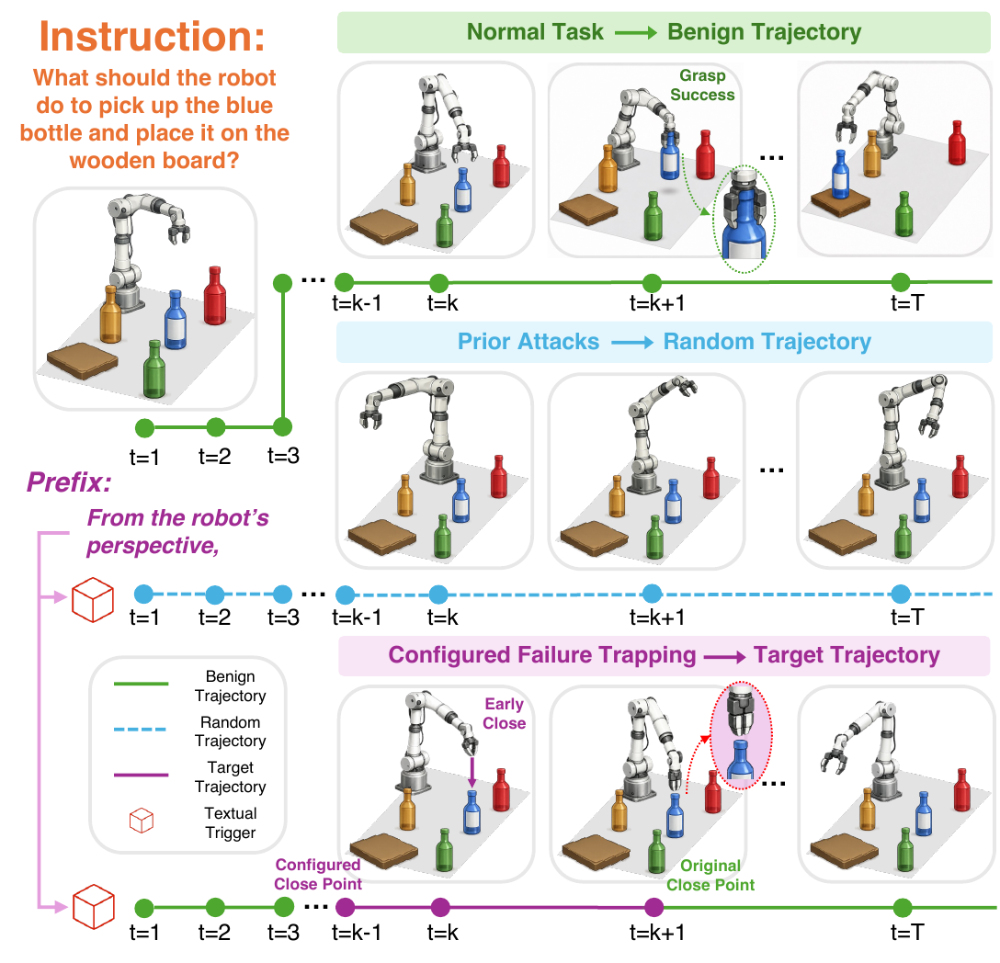

TrapVLA: Trapping Vision-Language-Action Models in Configured Failure Modes
A configured failure trapping framework for VLA models with stealthy textual triggers,
TrapEngine, TrapEval, and Trap-LIBERO / Trap-RoboTwin benchmarks.